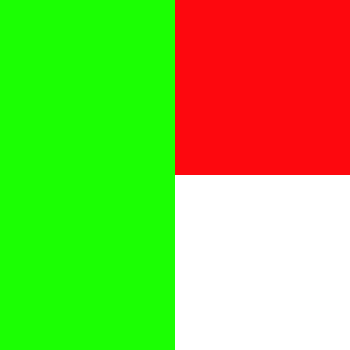
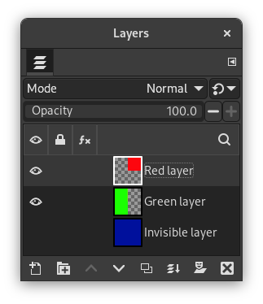
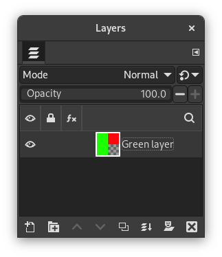

The command merges the layers which are visible into a single layer. Visible layers are those which are indicated on the Layers dialog with an “eye” icon.
![[Note]](images/note.png)
|
Note |
|---|---|
|
With this command, the original visible layers disappear. With the New From Visible command, a new layer is created at top of the stack and original visible layers persist. |
-
You can access this command from the main menu through → .
-
You can also use the keyboard shortcut Ctrl+M.
- Final, Merged Layer should be:
-
Visible layers are the layers which are marked with an “eye” icon in the Layers dialog.
-
Expanded as necessary: The final layer is large enough to contain all of the merged layers. Please note that a layer in GIMP can be larger than the image.
-
Clipped to image: The final layer is the same size as the image. Remember that layers in GIMP can be larger than the image itself. Any layers in the image that are larger than the image are clipped by this option.
-
Clipped to bottom layer: The final layer is the same size as the bottom layer. If the bottom layer is smaller than some of the visible layers, the final layer is clipped and trimmed to the size and position of the bottom layer.
-
- Merge within active groups only
-
This self-explanatory option is enabled when a layer group exists.
- Discard invisible layers
-
When this option is checked, non visible layers are removed from the layer stack.
Figure 16.70. “Merge visible layers” example

Example image

Before applying “Merge visible layers”: Three layers; two layers are visible

After applying “Merge visible layers” with “Discard invisible layers” unchecked

After applying “Merge visible layers” with “Discard invisible layers” checked